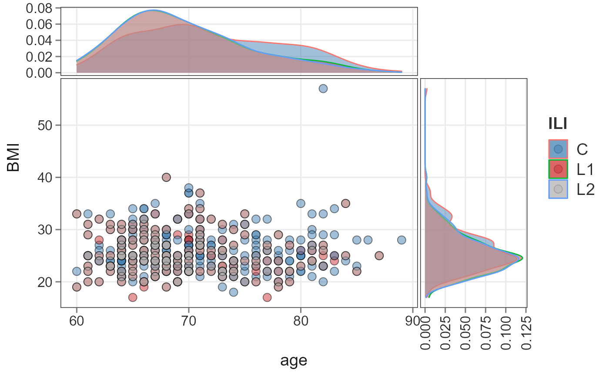

plotScatterViz.RdScater Plot
phyloseq-class object.
A column in sample_data to compare that is a numeric
A column in sample_data to compare that is a numeric
A column in sample_data to color points
geom_point. Default is 3
ggplot2 alpha value. Default is 0.5
ggplot2 point shape value. Default is 21
Logical. If side density to plot. Default is TRUE
ggside ggside.panel.scale requires a scalar numeric.
default is 0.3
a ggplot object.
A simple plotting utility for visualization of two numerical
variables. Provided two numerical
variable present in sample_data of a
phyloseq-class object, a scatter plot is returned.
Shetty SA (2021). Data visualization for microbiome analytics. https://github.com/microsud/biomeViz
library(biomeUtils)
library(biomeViz)
library(dplyr)
library(microbiome)
library(ggplot2)
ps <- FuentesIliGutData
plotScatterViz(ps, x_numeric = "age", y_numeric = "BMI",
color_var = "ILI") +
scale_fill_manual(values=c("steelblue", "brown3", "grey70"))+
scale_fill_manual(values=c("steelblue", "brown3", "grey70"))
#> Scale for 'fill' is already present. Adding another scale for 'fill', which
#> will replace the existing scale.
#> Warning: Removed 1 rows containing non-finite values (stat_density).
#> Warning: Removed 1 rows containing missing values (geom_point).
